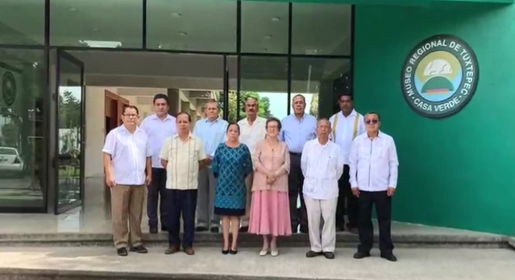

El Patronato Pro-Fundación del Museo Regional de Tuxtepec, Oaxaca, A.C. nació el 25 de octubre de 1990, integrado por ciudadanos comprometidos con la preservación de la historia y la cultura de la región.

Historia del Patronato
El Patronato Pro-Fundación del Museo Regional de Tuxtepec, Oaxaca, A.C. nació el 25 de octubre de 1990, integrado por ciudadanos comprometidos con la preservación de la historia y la cultura de la región.

Con el paso de los años, el patronato ha vivido cambios en su estructura, sumando nuevas voluntades y enfrentando retos legales y administrativos para consolidarse.
Tercera acta constitutiva y reestructuración con nuevas incorporaciones.
Primera modificación del acta notarial y nombramiento de un presidente honorario.